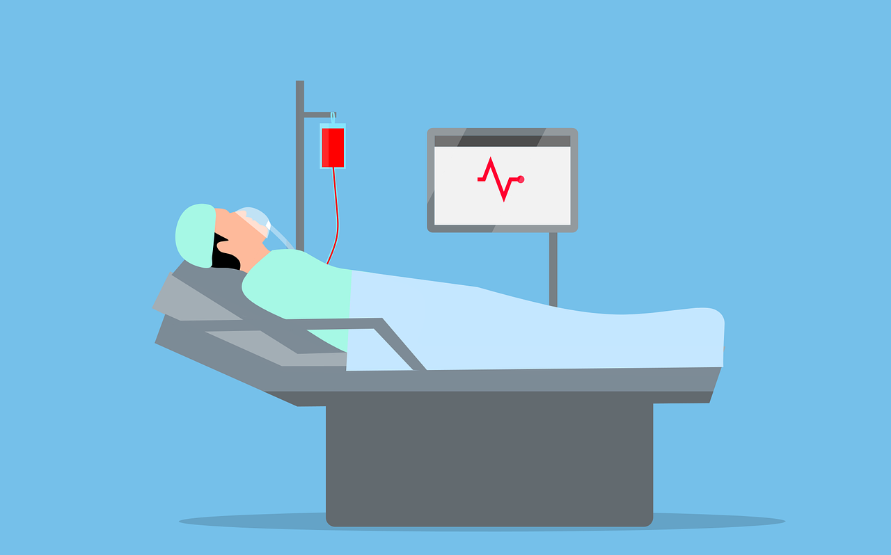

Hi! I am Flemming Kondrup, a PhD Student at McGill University and Mila working with Doina Precup. I previously graduated from McGill University with First-Class Honours and am a proud recipient of the Schull-Yang International Experience Award Scholarship 2021 and a winner of the ProjectX A.I. Competition 2021.
Contact: flemming.kondrup@mail.mcgill.ca
Recent Works
Here below are some of my recent contributions. See Google Scholar for more publications.

Towards Safe Mechanical Ventilation Treatment Using Deep Offline Reinforcement Learning
Flemming Kondrup*, Thomas Jiralerspong*, Elaine Lau*, Nathan de Lara, Jacob Shkrob, My Duc Tran, Doina Precup, Sumana Basu
created with
Website Builder Software .